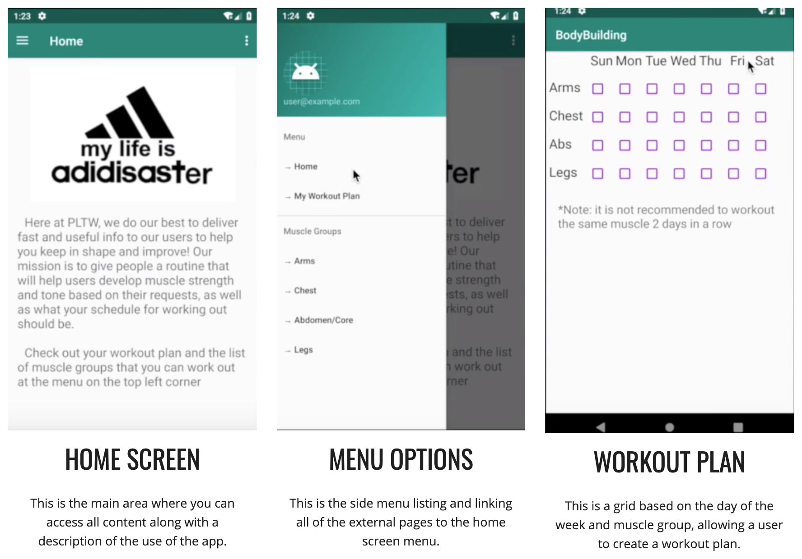

Miniature Train Project (Grade 9, 2nd period IED, 2/13/2017)
The Key Chain Project (Grade 9, 2nd period IED, 5/10/2017)
Entrepreneurship Project - "The Striker" (Grade 9, 2nd period IED, 5/17/2017)
Project Solar Hydrogen Vehicle (Grade 10, 6th period POE, 11/16/17)
Renewable Insulation Project (Grade 10, 6th period POE, 2/20/18)
Chatbot (Grade 11, 3rd period AP CSA, 12/2/2018)
BodyBuilding App (Grade 11, 3rd period AP CSA, 2/18/2019)

Printed Circuit Board Project (Grade 12, 5th period DE, 10/7/2019)